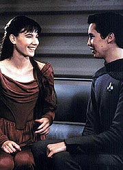
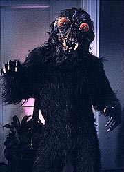
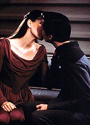
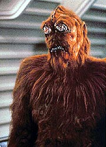

|
MANCHETE
DO EPISDIO
Tentativa
de explorar paixo de Wesley
termina em estrondoso fracasso
Episdio
anterior | Prximo
episdio
Sinopse:
Data Estelar: 42568.8.
A Enterprise designada para escoltar uma jovem garota e sua
guardi do planeta Klavdia II, onde elas viveram por quase toda a
vida da mais nova, at Daled IV, o planeta que ela nasceu para
governar.
 Salia,
com seus 16 anos, encontra-se ao acaso com Wesley, que fica
instantamente atrado por ela, para o desgosto da guardi
superprotetora da menina, Anya. Wesley tenta descobrir como se
aproximar da garota e pede ajuda a Riker e Guinan. O esforo no
tem sucesso, e o rapaz decide bater na porta de Salia sem qualquer
plano. Ela pede que ele a instrua em como usar o sintetizador de
alimentos, e ele apresenta a ela um mousse de chocolate Thaliano.
Enquanto isso, Troi est preocupada com as emoes que ela sente
dos novos passageiros, que parecem indicar que eles no so quem
parecem ser.
Salia ordenada a ficar em seus aposentos, enquanto Anya faz um
tour pela nave. Depois de criticar os procedimentos e a competncia
de Geordi na engenharia, a aliengena vai at a enfermaria, onde
ela descobre que h um paciente com uma doena contagiosa a bordo.
Ela insiste que ele seja morto imediatamente. A doutora Pulaski
obviamente se recusa, o que faz Anya se transformar em um monstro
enorme que pretende matar o paciente ela mesma. Worf e um grupo de
segurana chegam enfermaria, mas mal conseguem conter Anya.
 Aps
o incidente, a doutora Pulaski comea a achar que os passageiros so
alasamorfos, uma espcie que, diz-se, possui o poder de mudar sua
forma. Para no provocar Anya mais ainda, Picard ordena que Wesley
fique longe de Salia.
Contra a vontade de Anya, Salia vai at os aposentos de Wesley,
onde eles trocam um beijo apaixonado. Quando o monstro furioso chega
repentiamente, Salia mesmo se transforma em uma criatura ainda mais
assustadora, resultando em uma grande tenso entre a garota e sua
guardi. Aps elas voltarem forma humana, Wesley fica chocado
com a descoberta de que a garota dos seus sonhos no quem ele
pensa que .
Quando sua estadia est perto do fim, Salia tenta se desculpar com
Wesley por qualquer dor que ela pode ter causado, mas seus pedidos so
recebidos com indiferena. Dizendo a Wesley que ela o ama, Salia
vai para a sala de transporte. Quando o alferes percebe seus reais
sentimentos, ele vai at a sala de transporte com um mousse de
chocolate Thaliano, pouco antes de Salia se teleportar para Daled
IV. Os dois trocam as ltimas palavras, antes que a garota parta da
Enterprise.
Comentrios:
"The
Dauphin" s no o pior episdio da temporada porque o
segundo ano tambm tem "Shades of Gray". Sob todos
os aspectos possveis, trata-se de um segmento deplorvel da srie.
Em primeiro lugar, o foco da histria Wesley. Nada contra o
alferes em si, mas patente que os roteiristas no souberam
escrever para o personagem at que chegou o momento de despach-lo
da srie. Em segundo lugar, uma histria de amor adolescente e
pouco inspirada do Wesley. Dificilmente poderia ficar pior que isso.
Os 45 minutos esto preenchidos com os mais velhos clichs que
essa histria poderia conter. Wesley, como seria de se esperar,
catastrfico. Em vez de termos algum insight valioso sobre a
personalidade do alferes (como tivemos, por exemplo, em "Evolution",
do terceiro ano da srie), aqui o vemos como apenas mais um garoto
que se apaixona por uma garota, em mais uma histria de amor impossvel.
No d para ser feliz.
 Nem
mesmo a busca de Wesley por insights alheios, como a perspectiva
Klingon do amor, ou ainda a interpretao de um andride,
oferecem algum interesse. E tirando a participao dos outros
personagens na investigao do alferes, no sobra quase nada.
Para que se tenha uma idia da gravidade da situao, nem Guinan,
que normalmente se salva at nos piores episdios, conseguiu
brilhar. A cena de Whoopi Goldberg com Jonathan Frakes no bar panormico
possivelmente a pior coisa que Guinan j fez em toda a srie. No
pela atuao, mas pelo roteiro em si, que terrvel.
E se em termos dramticos o episdio no presta, em termos tcnicos
no vai muito melhor. A maquiagem dos tais alasamorfos uma das
coisas mais malfeitas em toda a srie --at mesmo com o oramento
capenga da Srie Clssica daria para fazer algo melhor.
Esses aliengenas deixam um Gorn se achando o supra-sumo dos
efeitos especiais.
 As
transformaes tambm no deixam por menos. As passagens so
extremamente artificiais, deixando o telespectador pensando sobre
quem eles queriam enganar com aquele efeito. Os confrontos de Worf
com Anya talvez sejam a coisa menos pior de todo o episdio, embora
no meream tambm ser louvados.
A nica cena visualmente agradvel de todo o episdio a em que
Wesley leva Salia para conhecer o holodeck. Em uma das projees,
eles aparecem sobre um asteride, contemplando o espao. A viso
das mais bonitas, embora seja difcil de acreditar que aqueles
dois poderiam estar ali, no fosse um holodeck. Claro, os dilogos
so de chorar, mas essa cena, com a televiso sem som, assistvel.
Para completar, o episdio fecha com Wesley confrontando seus
preconceitos e descobrindo que a real forma de Salia um lindo ser
de luz. Santo clich, Batman!
Acho que o melhor jeito de completar essa anlise com um
conselho, um que Tasha Yar j deu a Data em "The
Naked Now". "Jamais aconteceu!"
Citaes:
Data - "It
should be that simple, Wesley. Judging by her appearance, it is
likely you and Salia are biologically compatible. Of course, there
could be a difference in the histocompatibility complex in the cell
membrane, but..."
("Deve ser bem simples, Wesley. Julgando por sua aparncia,
provvel que voc e Salia sejam biologicamente compatveis.
Claro, pode haver alguma diferena no complexo de
histocompatibilidade da membrana celular, mas...")
Wesley - "Data, I want to meet her, not dissect her."
("Data, eu quero conhec-la, no dissec-la.")
Guinan - "Just because a girl runs out doesn't mean she
doesn't wish you to follow."
("S porque uma garota corre de voc no quer dizer que ela
no queira que voc a siga.")
Trivia:
 Neste episdio Wil Wheaton (Wesley Crusher) d seu primeiro beijo
em frente s cmeras. A "sortuda" foi Jamie Hubbard, que
tinha na poca 26 anos. Wil tinha apenas 16.
Neste episdio Wil Wheaton (Wesley Crusher) d seu primeiro beijo
em frente s cmeras. A "sortuda" foi Jamie Hubbard, que
tinha na poca 26 anos. Wil tinha apenas 16.
"Dauphin" era o ttulo dado ao filho mais velho do Rei da
Frana entre 1349 e 1830.
Repare no quarto de Wesley. Em uma prateleira h um feiser e um
comunicador idnticos aos da Srie Clssica.
Ficha
tcnica:
Escrito por Scott Rubenstein e
Leonard Mlodinow
Direo de Robert Bowman
Exibido em 20/02/1989
Produo: 036
Elenco:
Patrick Stewart como
Jean-Luc Picard
Jonathan Frakes como William Thomas Riker
Brent Spiner como Data
LeVar Burton como Geordi La Forge
Michael Dorn como Worf
Marina Sirtis como Deanna Troi
Wil Wheaton como Wesley Crusher
Elenco convidado:
Diana Muldaur como
Katherine "Kate" Pulaski
Whoopi Goldberg como Guinan
Paddi Edwards como Anya
Jaime Hubbard como Salia
Episdio
anterior | Prximo
episdio
|